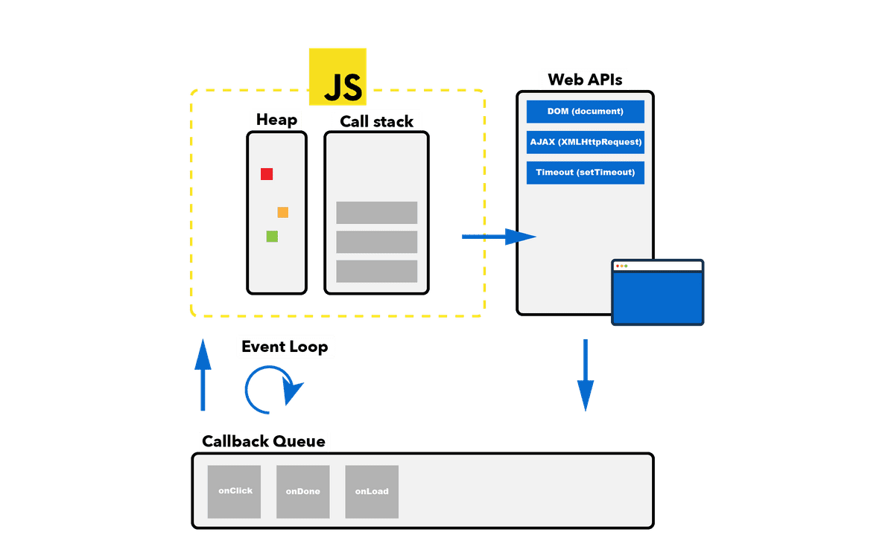

01. What is difference between Local Storage and Session Storage ?
Local Storage:
- Local storage works, appears, and similar to session storage. For instance, just like Session storage, local storage can also store data ranging between 5mb - 10mb depending upon a browser's implementation.
-
Data Persistence : Unlike session storage where data is automatically deleted when a browser tab or window is closed, data in local storage has no default expiry. It's only deleted if you manually delete that data from the local storage either directly, via browser settings, or through your JavaScript code.
-
Using Local Storage:
You can add and retrieve data from local storage in the same way you perform those operations with session storage. The only change is now you'll have to use the localStorage object to perform these operations instead.
Session Storage:
-
Session storage can store data ranging between 5mb - 10mb. The exact amount of storage capacity varies as per each browser's implementation, but it's a lot more than 4kb of storage capacity cookies offer!
-
Data Persistence: As the name suggests, session storage only persists the data as long as a browser tab is opened. This means that each time you open a new tab or a new browser window, a new session storage is created. So any data you store inside the session storage will automatically get deleted when you close that tab/window.
-
Using Session Storage: This would return the length of the session storage along with an object representing the data that's currently present inside. Since it's empty to begin with, the length is 0. Note that you may directly access the sessionStorage object as well.
02. What is difference between Global Scope and Block Scope in JS ?
Global Scope:
Block Scope:
03. How To Work JS Event Loop?

The Event Loop has one simple job — to monitor the Call Stack and the Callback Queue. If the Call Stack is empty, the Event Loop will take the first event from the queue and will push it to the Call Stack, which effectively runs it.
04. How many way to gat JavaScript undefined Value ?
There are 8 ways to get Undefined Value in JavaScript.
- 01. Variable that is not initialize will give undifined.
- 02. When we cann't return Function with give undefined.
- 03. When funtion parameter that is not passed will be Undefined.
- 04. If return has nothing on the right side will return Undefined.
- 05. Property that doesn't no existing on an Object will give you undefined.
- 06.Accessing array elements outsite of the index range.
- 07.Deleting an Element insite an array.
- 08.Set a value directly to undefined.